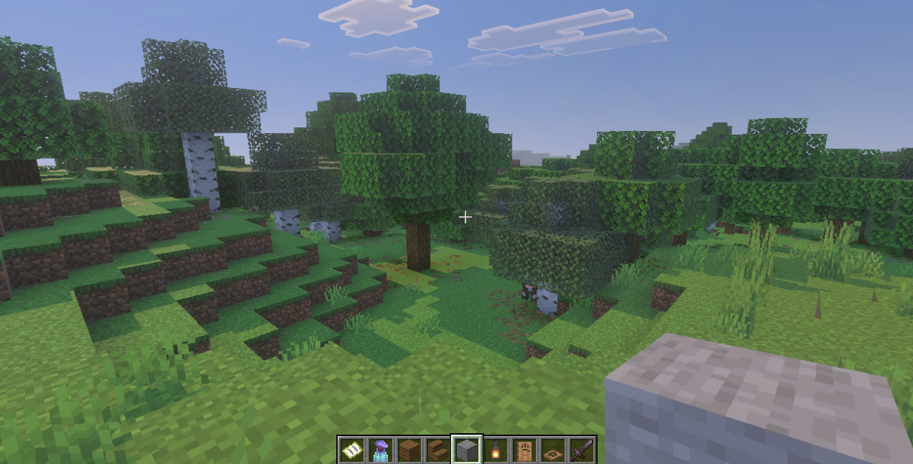

Minecraft
This is the ultimate 'Skeletal' builder. Long before I knew what HTML was, I was obsessed with building in Minecraft.

This is the ultimate 'Skeletal' builder. Long before I knew what HTML was, I was obsessed with building in Minecraft.

The puzzles in Portal are the ultimate test of Logic!
Since I love skateboarding in real life, this is my go-to for relaxing. I love testing the physics Engine—sometimes I even try to 'break' the game just to see how the physics logic reacts.